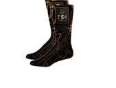
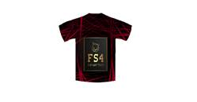

Final Space 4
By Benjamyn Thorley,
Jared Apaza Pinto,
Lucas Neisler,
and Martin Blayney
Table of Contents
Profiles
Criteria for success
Design sketch, 3D model, trade display setup
SDG/Mind map
Research - Lucas and Marty
Research - Jared, Ben, and collaborative
Logos
Merch
Marty - Discussion
Contingency plan
Website design
Possible Clients
SWOT analysis
SCRUM meetings
Profiles
Lucas Neisler - Team Leader, Design Engineer
Throughout the project, Lucas mainly sketched and modelled the hub in Tinkercad. He also did lots of research towards the actual creation of the hub itself and what it should contain.
Benjamyn Thorley - Communications Manager
Ben mainly focused on writing up documents such as the mind map, contingency plan and possible clients. He also aided people with whatever needed to be done but was taking too much time.
Jared Apaza Pinto - Marketing Manager, Merchandise Designer
Jared focused on merchandise and developing logos. He also did research towards website design features and colouring.
Martin Blayney - Scientist, Environmental Engineer, Coder
Marty's work was mostly verbal and decision making. Most of the conversations were with Lucas while he was designing the hub. He also did research towards the environmental threats and what was needed in the hub.
Criteria for Success
Our team has a few requirements, these requirements include a finished 3D model of the hub, a finished website and merchandise that can be easily produced. We need a 3D model because it is an easy way to show people exactly what the hub will look like in theory without having to show them the complex blueprints. We need a website to make out business more public and to show off what we've done with the project. It can also be used for advertising our merch and telling people what, we as a company, do. We need merch as an advertising tool to the general public and potentially have industry leaders recognise us and purchase our design to go to space.
Design sketch/3D model
Design sketch (work mainly completed by Lucas however, Marty assisted with brainstorming ideas and possible design flaws/improvements)
Trade
display design
SDG
Our project links with the Sustainable Development Goals as it will help with Climate action. The scientists that will be sent over to work in the hub will be able to conduct controlled tests of methods that can help combat climate action back here on earth. They could also try methods that we dare not try here for risk of damaging the atmosphere or the surrounding of where the test is conducted. It would allow humanity to test what extreme methods would be feasible and side effects that may occur and if they are worth the risk as a last-ditch effort.
Mind Map
Research
Lucas - design features, environmental threats, hub O2 systems,
tools for research tasks and surgeries
What kind of equipment is usually needed for surgeries and research tasks?
Scalpel, sutures, staples, skin surgery glue, endo scope,
aesthetic medications - knives, tweezers, PPE, measuring tools, beakers, bowls, flasks,
funnels, pipettes, and cleaning.
Will external radiation effects plants that would be above ground?
Yes, an abundance of harmful radiation can damage the seeds which will lead to them slowly dying.
What kind of radiation is most frequent and harmful on mars?
Gamma rays and x-rays are most common on mars and lead can block that easily. It only requires about 0.3 cm of lead blocks all gamma and x-rays, but we will put at 2.5cm to be safe.
What kind of exterior radiation shielding should be used?
Option 1 - 4-inch external titanium, 0.5-inch, 1.5-inch interior titanium.
Option 2 - 4-inch external titanium/lead alloy (50/50), 2-inch interior titanium.
(Either can be selected due to budget or weight constraints of the company that builds it. One is stronger but the other is cheaper.)
How much O2 do humans consume per day on average?
Humans consume approximately 550L of oxygen per day. This means that small plants are not viable for producing O2. They produce too little per day to be practical.
What is the most practical method for producing O2?
Breaking down ice into hydrogen and oxygen is a possibility however you would need to mine approx. 1.65 tonnes of ice/day/person which is inconvenient. You would also need lots more power to separate the atoms. Algae produces large amount of oxygen, doesn't need to be tended to, it only needs oxygen during the night, compact designs are viable and can be completely submerged in water to stay hydrated. A simple filter to eliminate particles that may compromise scientific experiments would need to be changed regularly, however the filter is easily accessible (its access port is in the back of the shelving unit)
Marty - Scientific, environmental, practicality
What are some threats on the mars surface?
Radiation is the main threat however dust storms are a small threat to people and electrical components as they can damage or destroy communication components if severe enough.
How large would a battery have to be to power a building without recharge for a few days?
The battery bank would need to be sizeable. We chose to install tesla batteries as they could be a potential sponsor of the hub. 5 batteries will hold 67.5 kWh which should be enough (if conserved) for a bit under a week.
How large would storage need to be (considering all necessary tools, equipment, and basic survival items like food)?
Storage would need to be large to permit space for small amounts of food for the crew as well as equipment for all research equipment or samples that may be collected. Easily accessible and more concealed storage would be best.
Jared - Website Research
What do people like in websites?
People like different bright colours, fonts, button styles, heading sizes, image styles, image sizes, and backgrounds, small information texts, easy navigation, and lots of images
Ben - Equipment research
How is equipment usually stored for surgeries and research tasks?
the equipment is usually stored in cases or leather covers and are usually stored in its own storage away from contamination and to keep them sterile.
How efficient will solar panels be on mars?
Mars gets a different amount of daylight per day then earth, as it only gets 6 hours of direct sunlight per day and 8 hours of non-direct sunlight per day. Solar panels produce 250 - 400 watts per hour. Most solar panels last 25-30 years.
How much power does an average apartment use daily?
The average household uses 20-30 KW per hour.
What types of workstations are used in a biomedical hub?
A Biomedical Space Hub should be able to operate as a laboratory, medical centre, and operating theatre. It needs to have things like a microscope to analyse research and data collection samples, test tubes, Bunsen burner, spring balance, measuring cylinders, thermometers. The actual stations will be a data analysis station, map table, storage centre, operation table/room, engineer workstation to fix anything that needs to be fixed, lab/ experimenting room.
Marty & Lucas - Nuclear Fission research
What size should the nuclear reactor module be?
Concluded on 2 one metre by one metre modules. These will produce beta particles.
Different logos

We
selected the logo on the right as it has a nice colour pallet that people
will like, as they generally like bright colours which is why we have the
gold in the colour scheme, as well as an overall good-looking design. All
logos were made by Jared
Merchandising finished products
All products were made by Jared
Socks
|  |
Water bottle
Hoodie
T-shirt

First cap design
Second T-Shirt
Marty - Scientist + Environmental Researcher + Co-Design Engineer
Fission vs Fusion discussion with Lucas:
Marty reminded Lucas of the differences between fission and fusion nuclear reactions.
Fission is atoms breaking down, e.g., Uranium breaks down into smaller atoms. Most common and easiest to produce.
Fusion is atoms merging. E.g., Hydrogen atoms merging. Occurs in the sun. Massive
Final decision was Fission reactors were more practical for the hub.
Contingency plan (completed by Ben)
Possible Clients - Ben
|
Needs |
Wants |
|
A biomedical hub |
The biomedical hub can be upgraded over time and be used on multiple missions |
|
Backup systems to rely on |
Can hold multiple people at the same time |
|
The biomedical hub needs to be able to gather information about mars |
|
|
To be able to keep people alive for long periods of time |
|
|
What makes our biomedical hub better than others |
|
|
One of Nasa goals is to characterize mars climate |
|
SpaceX:
|
Needs |
Wants |
|
A biomedical hub that can hold multiple humans for an extended period of time |
The biomedical hub can be relied on for future missions |
|
Safety for people involved |
|
|
Reasons why they should chose our company over others |
|
|
The biomedical hub needs to be able to conduct research and gather information about mars and its surface |
|
Governments agency:
|
Needs |
Wants |
|
To be able to get useful information about mars |
Can be used for military purposes |
|
Renewable energy inside the biomedical hub |
To be an exclusive colony and when they expand form a small government |
|
Has the capability to expand and form a civilisation |
|
|
To have rovers to scout new areas and expand to new sights and map new areas |
|
Defence forces:
|
Needs |
Wants |
|
The biomedical hub needs to be used for military uses |
The biomedical hub to be able |
|
Can gather information about the mars surface and can be used in experiments |
Renewable energy |
|
|
To be safe to work and be around the biomedical centre |
Medical centres:
|
needs |
Wants |
|
To keep the people inside the biomedical hub safe |
More people can be transferred up to the biomedical hub |
|
The biomedical hub needs to be safe for everyone inside |
|
|
The biomedical hub needs to include operating tables and research stations so information can be gathered |
|
Environmental organizations:
|
Needs |
Wants |
|
Sustainable building materials and energy |
To develop a small ecosystem |
|
Environmental research about mars surface and environment |
|
|
To have storage centres to be able to store research samples |
|
SWOT Analysis
|
|
Strengths |
weaknesses |
opportunities |
threats |
|
Ben |
- lots of work/research - All the research on one page |
- research is messy |
- Making it neater |
- lack of backups |
|
Lucas |
- High detail - Organised work - thought-out |
- over detailed - some work is a little messy - expensive/ heavy design |
- Modular design |
- file deletion/ corruption |
|
Marty |
- Heavy collaboration- - most problems solved by multiple people |
- most discussions are not written down - missed work due to sickness |
- can help with all aspects of the group |
- file deletion - getting sick |
|
Jarod |
- lots of choices of logos - same themes throughout work |
- all digital designs |
- merch could be different colours |
- loss of files - all logo designs are similar - no backups |